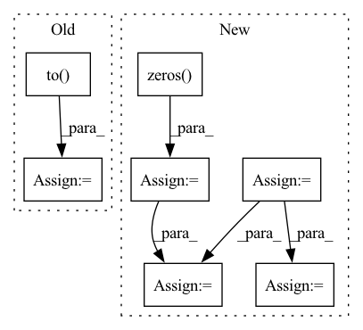

Pattern ID :3647

Before Change
feat_aug[div_mask] /= scale_factor
edge_index_aug = dense_to_sparse(adj_aug)[0].to(self.device)
feat_aug = feat_aug.to(self.device)
label_aug = label_aug.to(self.device)
return feat_aug, edge_index_aug, label_aug
After Change
adj = data.s
node_idx = data.n_id
batch_size = adj.shape[0]
num_nodes = adj.shape[1]
adj_aug, feat_aug = deepcopy(adj), deepcopy(x)
label_aug = torch.zeros(batch_size, dtype=torch.int32)
prob = torch.rand(batch_size)
label_aug[prob < rate] = 1
// high-degree
hd_mask = prob < rate / 4
n_hd = torch.sum(hd_mask)
edges_mask = torch.rand(n_hd, num_nodes) < num_added_edge / num_nodes
edges_mask = edges_mask
adj_aug[hd_mask, :] = edges_mask.float()
// outlying
ol_mask = torch.logical_and(rate / 4 <= prob, prob < rate / 2)
adj_aug[ol_mask, :] = 0
// deviated
dv_mask = torch.logical_and(rate / 2 <= prob, prob < rate * 3 / 4)
feat_c = feat_aug[torch.randperm(batch_size)[:surround]]
ds = torch.cdist(feat_aug[dv_mask], feat_c)
feat_aug[dv_mask] = feat_c[torch.argmax(ds, 1)]
// disproportionate
mul_mask = torch.logical_and(rate * 3 / 4 <= prob, prob < rate * 7 / 8)
div_mask = rate * 7 / 8 <= prob
feat_aug[mul_mask] *= scale_factor
feat_aug[div_mask] /= scale_factor
edge_index_aug = dense_to_sparse(adj_aug)[0]
inv_idx = torch.zeros(num_nodes, dtype=torch.int64)
inv_idx[node_idx] = torch.arange(batch_size)
edge_index_aug[1] = inv_idx[edge_index_aug[1]]
return feat_aug, edge_index_aug, label_aug
In pattern: SUPERPATTERN
Frequency: 3
Non-data size: 7
Instances
Fragment ID: 13753808
Project Name: pygod-team/pygod
Commit Name: 586b136a6083b25183c4b6e4b86b0e0d0a4e1a0f
Time: 2023-05-11
Author: zliu234@uic.edu
File Name: pygod/detector/conad.py
M Class Name: CONAD
N Class Name: CONAD
M Method Name: _data_augmentation(2)
N Method Name: _data_augmentation(3)
M Parent Class: DeepDetector
N Parent Class: DeepDetector
M File Name: pygod/detector/conad.py
N File Name: pygod/detector/conad.py
M Start Line: 219
M End Line: 279
N Start Line: 249
N End Line: 288
'>
Before Change
recombine = True
for i, target in enumerate(targets):
ids, targ, targ_lens = target
target[1] = target[1].to(self.device)
targ_lens = targ_lens.to(self.device)
target[1] = self.hparams.speedperturb(target[1], targ_lens)
if i == 0:
min_len = target[1].shape[1]
else:
if target[1].shape[1] < min_len:
min_len = target[1].shape[1]
if self.hparams.use_rand_shift:
// Performing random_shift (independently on each source)
recombine = True
for target in targets:
rand_shift = torch.randint(
self.hparams.min_shift, self.hparams.max_shift, (1,)
)
target[1] = target[1].to(self.device)
target[1] = torch.roll(
target[1], shifts=(rand_shift[0],), dims=1
)
// Re-combination
if recombine:
for i, target in enumerate(targets):
if self.hparams.use_speedperturb:
target[1] = target[1][:, 0:min_len]
if i == 0:
mix = target[1]
else:
mix = mix + target[1]
return [mix, targets]
def cut_signals(self, mixture, targets):
After Change
if self.hparams.use_speedperturb:
// Performing speed change (independently on each source)
new_targets = []
recombine = True
for i in range(targets.shape[-1]):
new_target = self.hparams.speedperturb(
targets[:, :, i], targ_lens
)
new_targets.append(new_target)
if i == 0:
min_len = new_target.shape[-1]
else:
if new_target.shape[-1] < min_len:
min_len = new_target.shape[-1]
if self.hparams.use_rand_shift:
// Performing random_shift (independently on each source)
recombine = True
for i in range(targets.shape[-1]):
rand_shift = torch.randint(
self.hparams.min_shift, self.hparams.max_shift, (1,)
)
new_targets[i] = new_targets[i].to(self.device)
new_targets[i] = torch.roll(
new_target, shifts=(rand_shift[0],), dims=1
)
// Re-combination
if recombine:
if self.hparams.use_speedperturb:
targets = torch.zeros(
targets.shape[0],
min_len,
targets.shape[-1],
device=targets.device,
dtype=torch.float,
)
for i, new_target in enumerate(new_targets):
targets[:, :, i] = new_targets[i][:, 0:min_len]
mix = targets.sum(-1)
return mix, targets
def cut_signals(self, mixture, targets):
'>
Fragment ID: 13753820
Project Name: speechbrain/speechbrain
Commit Name: 8534c79a22138d90a7df3b6a93a785806e8c3cfd
Time: 2020-12-11
Author: ravanelm@cdr2596.int.cedar.computecanada.ca
File Name: recipes/WSJ2Mix/separation/train.py
M Class Name: Separation
N Class Name: Separation
M Method Name: add_speed_perturb(3)
N Method Name: add_speed_perturb(2)
M Parent Class: sb.Brain
N Parent Class: sb.Brain
M File Name: recipes/WSJ2Mix/separation/train.py
N File Name: recipes/WSJ2Mix/separation/train.py
M Start Line: 206
M End Line: 238
N Start Line: 198
N End Line: 245
'>
Before Change
loss: A float32 scalar representing normalized total loss.
positive_label_mask = targets == 1.0
cross_entropy = F.binary_cross_entropy_with_logits(logits, targets.to(logits.dtype), reduction="none")
neg_logits = -1.0 * logits
modulator = torch.exp(gamma * targets * neg_logits - gamma * torch.log1p(torch.exp(neg_logits)))
loss = modulator * cross_entropy
weighted_loss = torch.where(positive_label_mask, alpha * loss, (1.0 - alpha) * loss)
weighted_loss /= normalizer
return weighted_loss
After Change
+ (1.0 - targets) * torch.log(1.0 - outputs))
loss = focal_weight * bce
loss = torch.where(torch.ne(targets, -1.0), loss,
torch.zeros(loss.shape, device=device))
loss /= normalizer
return loss
'>
Fragment ID: 13753694
Project Name: sevakon/efficientdet
Commit Name: cc2e5246bcb32e8fd405e64eec12b70088f1f097
Time: 2020-05-25
Author: sevakonyakhin@gmail.com
File Name: utils/tools.py
M Class Name: AnonimousClass
N Class Name: AnonimousClass
M Method Name: focal_loss(5)
N Method Name: focal_loss(5)
M Parent Class:
N Parent Class:
M File Name: utils/tools.py
N File Name: utils/tools.py
M Start Line: 80
M End Line: 87
N Start Line: 74
N End Line: 91